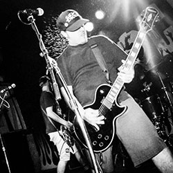
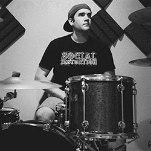
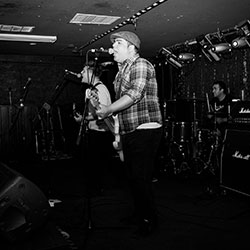
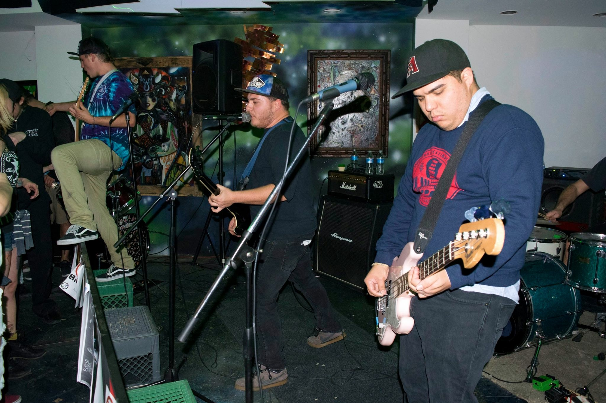
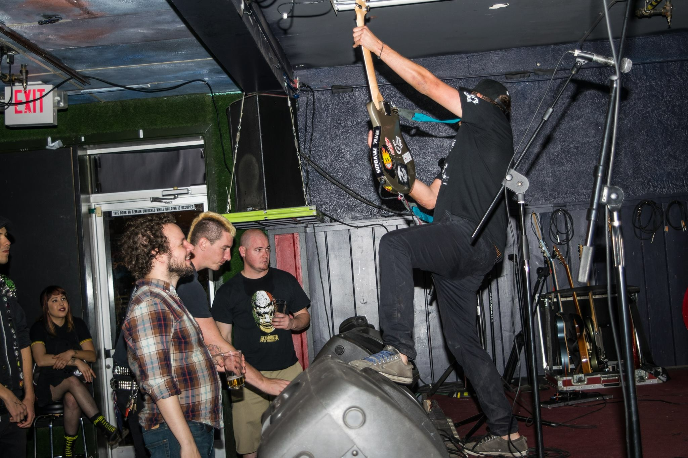

THE HOTCHIKS
Tucson’s The Hotchiks play the hell yeah, this is badass type of pop-punk reminiscent of NOFX or Screeching Weasel. And, despite the name, there are no women in this band. Just four dudes playing “sweet n juicy punk rock tunes for those moist ears of yours!!” Yup, that sounds about right.
—YabYum

Garrett Moore
Guitar/Vocals

Cisco Musfelt
Guitar/Vocals

Kenny Padilla
Drums

Andres Butista
Bass/Vocals
So, we need to write this bio and what better way to do it than by getting the only original member...ME! It all started back in '09. I moved out to a suburb of Tucson, AZ because of a house fire. I hated being out there. I would spend every weekend in town skateboarding and hanging out with my best pals. One of them was Pablo. He mentioned that he played drums, but they were always jammed up in storage at his apartment. One fateful day, spring cleaning came around and we took the drums to my place. I only knew a couple of riffs and plucks on a guitar. Thankfully, my older brothers jammed, so I would practice on one of their old acoustic guitars at the time. When we set up Pablo's drums, he began to play and I couldn't believe what I was hearing. I immediately picked up my acoustic and plucked the few chords I knew. The magic that I felt in that room, on that day, changed my life. We decided to make a band.
A few weeks went by and all we did was jam our favorite songs. I was flipping through a magazine, looking at all the hot chicks and I yelled at Pablo, "What if we just call ourselves Hotchicks?" I wrote it big, in cool letters, on a folder I kept my songs in and I ended up spelling it wrong. I wrote "Chicks" without the second C. That's how the name came to be. Summer ended, I moved back in town and Pablo switched schools, but that didn't stop the jam. I called a guy named Aaron, who played bass, and we had our first jam as a band. It was amazing! It was time to write songs and bring ideas together. Our first show was at Aaron's girlfriend's birthday party. Her pops was cool enough to pay us and we used the money to buy our first PA speaker for a mic. We felt like we needed another guitarist, so we added a guy named Jeff to the band. One day, i was hanging out with Pabz and Jeff and we met another tall, long haired, mystical skateboarder named Mason. We clicked the second we met each other. He mentioned he played bass and has a garage to practice in. We were constantly getting told to turn it down at my place, so that was a no brainer. Every day, after school, I'd ride the bus to Mason's house to skate and jam the days away. My own little piece of heaven. Some of our first songs were "Fuck the System", "Dear Authority" (which was later recorded for Nuclear Thoughts) and "I Want a Change".
We got kicked off stage at a fund raiser and again at Prom for playing what we liked to call, music.We played our first hit song "Cool Beans" at a high school talent show and a girl actually tossed her panties on stage.
After the school year ended, everybody was graduating and figuring out what to do. Pablo moved to Mesa and without him, Hotchiks ended. Mason and I would go visit Pabz from time to time. One day, I just stayed up there. I had my skateboard and my guitar. I had everything I ever needed. Except a job. I spent my time working on lyrics, playing guitar and skateboarding. With Pabz busy most the time, we didn't jam as much as I anticipated. Nine or ten months passed and with no job and no band, I decided to go back home. Hungry to play music, I looked for anybody that wanted to play. That's how I met a guy named Cheese. He was a drummer. He came over that weekend and we played some tunes. We played the old hit "Cool Beans" and decided that if we brought back the song, we had to bring back the name. I wanted to change it, but I couldn't think of anything better. I called long time friend, Aaron, and we got together in my skate buddy's shed, in his back yard. T'was the first jam of the newly formed Hotchiks. Five days later we had our first show with a band called O.C.D..


Time went by, but we always needed a bass player. In 2011, I called up my good buddy, Christian "El Side Pipe", a guitarist, to take the position, as i knew he already had his own songs and cool riffs. Hotchiks and O.C.D. played shows together for at least a year, until one day the great Side Pipe was leaving to Mexico, to go to school and live life. I was devastated. We put out news of Christian leaving the country and that we would be looking for someone to play bass. It must have been that day or the next when a guy named Andres contacted us. We realized he was in Peter's Holiday, a band we played with a couple of times and we knew he was a good fit. He was looking for a band to play in, so he came to jam with us. O.C.D. had just come to an end and we started seeing a lot more of a guy named Cisco at shows. Hotchiks played a home coming show with Claris and the Lotion Baskets (Pablo's new band) at a house, one night. It was a blast. Cisco told me he wanted to jump on guitar for our crowd favorite, "Come Around". There was magic again. Everybody was having a great time. There was booze and psychedelics were being served. Cisco and I were just hanging out, talking about all the good times at shows and he said he wanted to come jam with us again. After that night, it was confirmed. Cisco was lead guitar for Hotchiks. I was stoked! Two amazing musicians joined the band, I knew there was endless potential. Our sound grew louder, our songs had new meaning and we were on our way to become what I always wanted to be. In early 2012, Cheese got offered a job in Cali and said there's a good chance of him taking it. We were right in the middle of a big change for the band and we needed a drummer for big show dates we couldn't back out of. I remembered Pabz mentioned Claris and the Lotion Baskets weren't playing shows, at the time, so I called him and offered him his original spot back. He was stoked. This time, he had really important stuff to focus on, but we had some really fun shows with him back in the band. We were able to rent out our own practice room, downtown on Pennington, so we were more than happy to work around his schedule, even if it meant we couldn't jam as much.
In 2013, I was playing some acoustic sets at a club. That's when I met a guy named Kenny. He was in a band called Three White Lies, but his job was to put shows together and one day, he called me. I thought it was weird. He usually texted me when there was a spot available for a show. I answered and he asked me if I was ready to be excited. He said a band dropped the show for The Misfits and our band was the first one in mind. I told him to put us on the flyer. I called up the boys and they couldn't believe what I told them! I think Andres shed a little tear when I told him. We had always dreamed of playing at Tucson's hot spot, The Rialto, and this was our chance. The night of The Misfits show, we were hanging outside, drinking a couple beers and Pablo told us that it was time for him to step down as a musician and he would start concentrating on other things. We respected his decision and we went on to play an amazing last show with my best pal and co-founder of Hotchiks.
At one point, our jam room got flooded and we moved to another room right down the way from an awesome reggae band called Lift'DD. Went to check them out and it turned out that their drummer was in a former pop punk band we loved and played with, Summer in December. His name was Chris. We offered him a position in our band and he accepted. It was cool having his smooth clean drumming in our music. Before we even played our first show with him, we recorded our first album "Nuclear Thoughts". We recorded at the end of 2013, but it took a few good months for us to get the record ready and release it. In May of 2014, we played a CD release party at Gary's and that was probably our biggest accomplishment. Chris had to leave the band that summer and our search for a drummer continued. Little did we know, he was always right under our nose.
This time, with nobody to look to, we sent word out that we were going to need a drummer for a few shows we had lined up. We tried this one guy with an Avenged Sevenfold drum set, but it didn't work. A few days later, Kenny asked if we had found a new drummer. I said no and asked if he knew anybody. He asked, "What about me?", as if it was an obvious choice. I was confused, knowing that he was already in about three bands and running a venue, I didn't even consider him as an option! He said he was looking for a new band and we got together to learn some songs. The first song he learned was "One Name" and it was amazing! He blew my mind! He was in, WAY in. With everything that went down and the changes the band went through, we added "THE" to our name, marking a new band, a new age, and a new beginning as The Hotchiks (and because we still can't think of anything cooler).
— Garrett William Moore